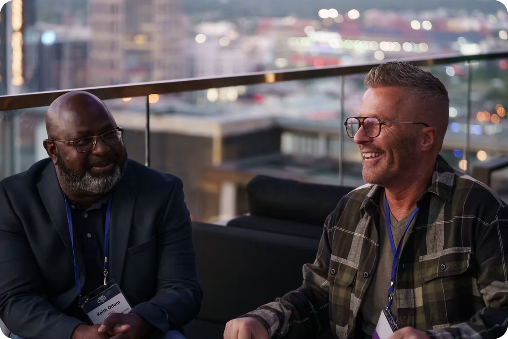
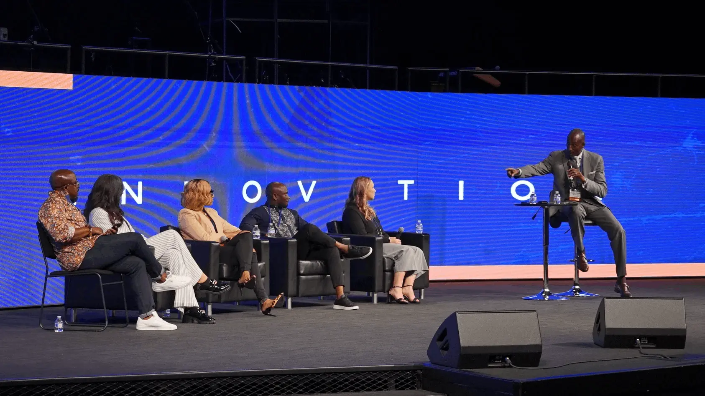
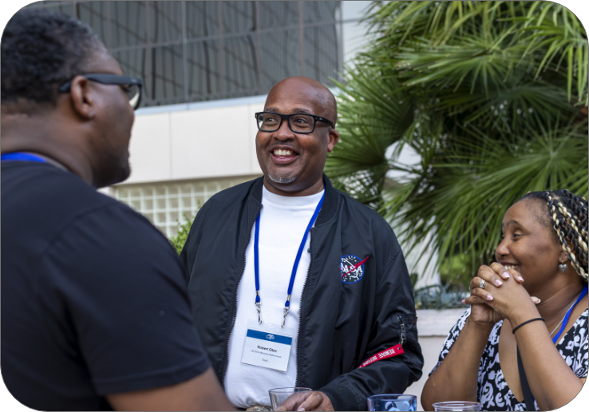

About the Big C
The Big C Collaborative is an invitation-based strategic network of businesses, innovators, entrepreneurs, consultants, technology providers, and ministry leaders committed to serving the global Church. Convened by the Church & Technology Summit (CTS), it is built on a simple belief: we can accomplish more for the Church by working together than we can alone.
The Collaborative brings together independent organizations to share opportunities, build meaningful relationships, promote one another, and combine their expertise to better serve the Big C Church. More than a sponsorship program, vendor directory, networking club, or acquisition model, it is a year-round strategic ecosystem designed to strengthen collaboration and collectively move the Church forward.
One Ecosystem
The Church & Technology Summit (CTS) serves as the convener of the Big C Collaborative, bringing together leaders, innovators, businesses, and organizations committed to advancing the global Church.
CTS provides the platform and infrastructure for meaningful connections, strategic partnerships, shared opportunities, and ongoing collaboration—creating an ecosystem where organizations can remain independent while working together toward greater Kingdom impact.

More Than Membership
The Big C Collaborative has no annual membership fee. Instead, membership is built on commitment, contribution, and active participation. Members embrace four core principles: Collaborate. Participate. Promote. Support. That means looking for opportunities to work together, engaging in Collaborative initiatives, promoting the ecosystem and one another when appropriate, and supporting CTS as the annual gathering place for organizations serving the Church.
Membership is invitation-based and intentionally curated. Organizations and individuals may be invited to participate or apply for consideration, with acceptance based on mission alignment, reputation, quality of products or services, and a willingness to actively contribute. Membership should be more than another logo on a website—it should mean something. Our goal is not to build the largest network, but the most engaged network of organizations committed to serving the Church.
To remain an active Big C Collaborative Partner, members commit each year to:
Participate in at least one Collaborative initiative, program, webinar, research project, roundtable, demonstration, or community activity.
Promote selected Collaborative and CTS initiatives through their networks and communication channels.
Collaborate by making appropriate introductions, identifying partnership opportunities, sharing expertise, or supporting other members when possible.
Support CTS through an annual presence at the Church & Technology Summit as an attendee, exhibitor, sponsor, presenter, activation partner, or other approved participant.
The expectation is simple:
Don’t just join the network. Contribute to it.
Active Big C Collaborative Partners receive benefits designed to create greater visibility, stronger relationships, and new opportunities throughout the year.
Benefits may include:

CTS becomes the place where the Collaborative physically gathers, but the relationship exists 365 days a year. The vision is that members don’t simply arrive at CTS and discover their booths happen to be next to each other—they arrive already knowing one another, referring opportunities, collaborating, sharing ideas, and solving problems together. CTS then becomes the annual moment when the entire ecosystem comes together to experience what’s possible.
Churches increasingly need an interconnected ecosystem of solutions, expertise, and innovation. No single organization can—or should—provide everything. We may have different products, business models, and even compete at times, but we share something greater: a commitment to serve the Church well.
The Big C Collaborative creates the table where these capabilities come together through alignment, contribution, collaboration, relationships, and shared commitment.
Sign UpThe future of serving the Church will require more than great organizations working independently. It will require connection, collaboration, and shared commitment. If you believe your organization belongs at the table, we invite you to connect with us.
To Connect: Email kodom@churchandtechnology.com